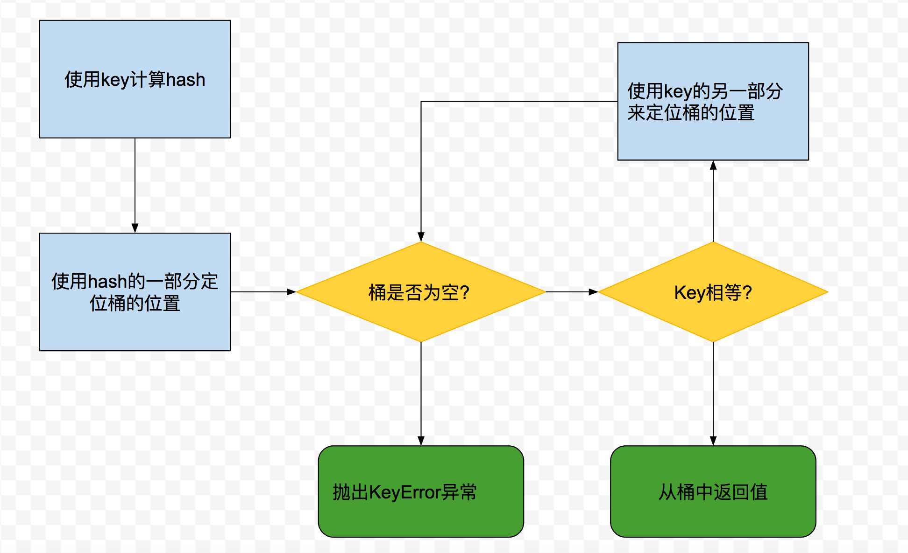

Dictionaries
Dictionary是Python中最常用的数据结构之一
推导式
使用setdefault处理无key
- 可以使用
get(key, defaultValue)和setdefault(key, defaultValue)来处理key不存在的情况,也可以使用collections.defaultdict(value)来设置创建默认new-key的字典。采用这方式，如果dd是一个defaultdict,那么当dd[k]不存在时，会调用default_factory来创建一个默认值，但返回结果依然是None
__missing__
这个方法默认是没有定义的，当dict的子类提供了这个方法的实现，那么当key不存在时，不会抛出异常KeyError，__getitem__会调用__missing__
- 这里需要注意
isintance检查key是否为str,否则会陷入死循环。使用k in dict.keys()效率很高
各种各样的dict
除了defaultdict之外，还会有很多别的dict
collections.OrderedDict
key有顺序的dict，类似Java中的TreeMap
collections.ChainMap
将多个dict当成一个dict，按顺序搜索key，只要搜索到key，结果返回成功
collections.Counter
持有key的计数
userDict
纯Python实现的标准dict
- 一般来说
userDict被用来集成，其他几个直接使用
UserDict派生
UserDict内部提供了很多默认的实现方法，因此直接从UserDict继承会很方便。UserDict不是继承dict，但其内部有个dict实例。这是真正数据存储的地方
不可改Mapping
标准库提供的映射类型都是可以修改的。你可能想让你的映射不能够被修改。Python3.3之后，标准库提供了只读的MappingProxy
- 上面的代码会抛出异常，因为
d_proxy是不允许被修改的
Set
- 需要注意
Set的元素必须是能哈希的 - 支持
&(intersetion)
Set语法
Python3中，set标准表示方法s = {1}。使用这个方式会比使用set([1])效率高
- 使用
dis来查看两种方式的字节码操作。第一种方式效率明显高于第二种
Set推导式
其他
性能
| 数据量 | 因子 | dict时间 | 因子 |
|---|---|---|---|
| 1000 | 1x | 0.000202s | 1.00x |
| 10000 | 10x | 0.000140s | 0.69x |
| 100000 | 100x | 0.000228s | 1.13x |
| 1000000 | 1000x | 0.000290s | 1.44x |
| 10000000 | 10000x | 0.000337s | 1.67x |
dict的高性能多亏了hashtable

好处和坏处
key必须要能hash,需要满足- 支持
hash()，同一个对象返回的值总是相同 - 支持
eq() - 如果
a==b，那么hash(a)==hash(b) - 用户定义的类型的
hash值是id()
- 支持
内存开销大
key搜索非常快
dict是典型的以空间换取时间
key的顺序依赖插入顺序
- 添加数据会影响已存在
key的顺序